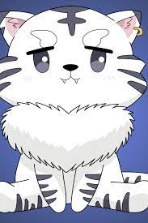

back
Kuhaku

Kohaku (琥珀, Kohaku?) formerly known as The White Monarch (白帝, Byakutei?) is a companion and a contracted beast of Touya on his journey. She is one of the Four Heavenly Beasts and also the leader of the Magical Beasts.